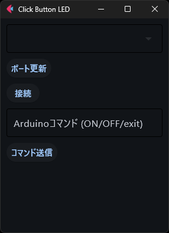

このサイトはRabyの作った自己満サイトです
このサイトから学べることは少ないと思います。しかし、新しい発見の手助けと なればと思います。新しい視点を得たり、興味を持つテーマを見つけたりするこ とができるでしょう。是非、お楽しみいただければ幸いです。
また、このようなことをやってほしいという要望があれば、ぜひお知らせくださ い。私たちは皆さまのご意見を大切にし、より良いサービスを提供できるよう努 めております。どんな小さなことでも構いませんので、皆さまのアイデアをお待 ちしております。


今回はArduinoとPythonを繋ぎPythonでLチカを制御できるようにします。 なぜ、ハードウェアにボタンをつけてON/OFFを制御しないのか？なぜC言語だけで完結させないのか？ Pythonのライブラリが多いのとコマンド送信という概念を学びたかったからです。実際にPythonのプログラムを書いてみましょう
はじめにPython仮想環境を作成しましょう。Pythonの仮想環境は,powershellやコマンドプロンプトで 「python -m venv [仮想環境名]」のように記述して実行すことで作成することができます。 私は以下のように書きます。
python -m venv ArdiunoENV
次に仮想環境を起動させて仮想環境内に必要なライブラリのインストールを行います。 コマンドプロンプト上で「.\[仮想環境名]\Scripts\activate」 と打つことで実行できます。
.\ArdiunoENV\Scripts\activate
※ . は作成した仮想環境へのパスを表しており、今回はプロジェクト直下に venv環境があることを想定しています。コマンドを実行している場所にvenv 環境がない場合は . の部分のパス適宜書き換えてください。

仮想環境を起動させることができたらPythonライブラリーの「Flet」 と「pyserial」をインストールしましょう。Pythonのライブラリーを インストールする際には「pip install [ライブラリー名]」と記述することで 実行することができます。実際に以下のコードパワーシェルに記述して実行してみましょう。
pip install flet
pip install pyseri
flet（ft）と serial.tools.list_ports をインポートしています。
前者は GUI アプリケーションの作成に使用し、後者はシリアルポートにアクセスするために使用します。
flet：PythonでGUIを持つウェブやデスクトップアプリケーションを作成するためのライブラリです。
serial.tools.list_ports：pyserial
ライブラリの一部で、利用可能なシリアルポートを一覧表示するのに役立ちます。
import flet as ft
import serial.tools.list_ports
main 関数を定義し、引数 page を受け取ります。これは flet のページオブジェクトです。
page: ft.Page：アプリケーション内のすべてのUI要素を含むメインコンテナです。
def main(page: ft.Page):
ページのタイトルとウィンドウのサイズを設定します。
page.title：ウィンドウのタイトルを設定します。
page.window.width と page.window.height：ウィンドウの初期寸法を設定します。
page.window.min_width と page.window.min_height: ウィンドウの最小寸法を設定します。
page.title = "Click Button LED"
page.window.width = 300
page.window.height = 400
page.window.min_width = 300
page.window.min_height = 400
update_ports 関数を定義しています。これはシリアルポートをリストし、 ドロップダウンメニューのオプションとして設定します。
update_ports(e)："ポート更新"ボタンがクリックされたときに呼び出される関数です。
ports = serial.tools.list_ports.comports()：利用可能なすべてのシリアルポートを一覧表示します。
portsList = [str(port.device) for port in ports]：デバイス名を抽出します。
ports_dropdown.options = [ft.dropdown.Option(port) for port in
portsList]：ドロップダウンメニューを利用可能なポートで更新します。
page.update()：更新されたドロップダウンオプションを表示するためにページをリフレッシュします。
def update_ports(e):
ports = serial.tools.list_ports.comports()
portsList = [str(port.device) for port in ports] # COMポート名だけを取得
ports_dropdown.options = [ft.dropdown.Option(port) for port in portsList]
page.update()
connect_serial 関数を定義しています。 選択された COM ポートに接続し、成功または失敗のステータスを更新します。
connect_serial(e)："接続"ボタンがクリックされたときに呼び出される関数です。
comport = ports_dropdown.value：ドロップダウンから選択されたポートを取得します。
serialInst.port = com_port：シリアルポートを設定します。
serialInst.baudrate = 9600：通信のためのボーレートを設定します。
serialInst.open()：シリアルポート接続を開きます。
status_label.value：接続状態を表示するためのラベルを更新します。
except Exception as ex：接続中に発生する例外をキャッチして表示します。
def connect_serial(e):
com_port = ports_dropdown.value
serialInst.port = com_port
serialInst.baudrate = 9600
try:
serialInst.open()
status_label.value = f"{com_port} に接続しました"
except Exception as ex:
status_label.value = f"接続に失敗しました: {ex}"
page.update()
send_command 関数を定義しています。入力されたコマンドを送信し、ステータスラベルに結果を表示します。
send_command(e)："コマンド送信"ボタンがクリックされたときに呼び出される関数です。
command = command_input.value：テキスト入力からコマンドを取得します。
if serialInst.is_open：シリアルポートが開かれているかをチェックします。
serialInst.write(command.encode('utf-8'))：コマンドをシリアルポートに送信します。
if command == 'exit'：コマンドが 'exit' の場合、シリアルポートを閉じます。
status_label.value：コマンドの状態を表示するためのラベルを更新します。
page.update()：更新された状態を表示するためにページをリフレッシュします。
def send_command(e):
command = command_input.value
if serialInst.is_open:
serialInst.write(command.encode('utf-8'))
if command == 'exit':
serialInst.close()
status_label.value = "切断されました"
else:
status_label.value = f"コマンドを送信しました: {command}"
else:
status_label.value = "シリアルポートが接続されていません"
page.update()
シリアルポートインスタンス、ドロップダウンメニュー、ボタン、テキストフィールド、ステータスラベルを初期化しています。
serialInst：新しいシリアル接続オブジェクトを初期化します。
ports_dropdown：シリアルポートを選択するためのドロップダウンを作成します。
refresh_button：利用可能なシリアルポートのリストを更新するためのボタン。
connect_button：選択されたシリアルポートに接続するためのボタン。
command_input：Arduinoコマンドを入力するためのテキストフィールド。
send_button：Arduinoにコマンドを送信するためのボタン。
status_label：接続およびコマンド状態を表示するためのラベル。
serialInst = serial.Serial()
ports_dropdown = ft.Dropdown()
refresh_button = ft.Button(text="ポート更新", on_click=update_ports)
connect_button = ft.Button(text="接続", on_click=connect_serial)
command_input = ft.TextField(label="Arduinoコマンド (ON/OFF/exit)")
send_button = ft.Button(text="コマンド送信", on_click=send_command)
status_label = ft.Text()
ページに GUI コンポーネントを追加しています。
page.add(...)：UI要素をページに追加し、アプリケーションウィンドウに表示させます。
page.add(
ports_dropdown,
refresh_button,
connect_button,
command_input,
send_button,
status_label
)
アプリケーションを起動し、main 関数をターゲットにしています。
ft.app(target=main)Fletアプリケーションを実行し、エントリーポイントとして main 関数を開始します。
ft.app(target=main)
import flet as ft
import serial.tools.list_ports
def main(page: ft.Page):
page.title = "Click Button LED"
page.window.width = 300
page.window.height = 400
page.window.min_width = 300
page.window.min_height = 400
def update_ports(e):
ports = serial.tools.list_ports.comports()
portsList = [str(port.device) for port in ports] # COMポート名だけを取得
ports_dropdown.options = [ft.dropdown.Option(port) for port in portsList]
page.update()
def connect_serial(e):
com_port = ports_dropdown.value
serialInst.port = com_port
serialInst.baudrate = 9600
try:
serialInst.open()
status_label.value = f"{com_port} に接続しました"
except Exception as ex:
status_label.value = f"接続に失敗しました: {ex}"
page.update()
def send_command(e):
command = command_input.value
if serialInst.is_open:
serialInst.write(command.encode('utf-8'))
if command == 'exit':
serialInst.close()
status_label.value = "切断されました"
else:
status_label.value = f"コマンドを送信しました: {command}"
else:
status_label.value = "シリアルポートが接続されていません"
page.update()
serialInst = serial.Serial()
ports_dropdown = ft.Dropdown()
refresh_button = ft.Button(text="ポート更新", on_click=update_ports)
connect_button = ft.Button(text="接続", on_click=connect_serial)
command_input = ft.TextField(label="Arduinoコマンド (ON/OFF/exit)")
send_button = ft.Button(text="コマンド送信", on_click=send_command)
status_label = ft.Text()
page.add(
ports_dropdown,
refresh_button,
connect_button,
command_input,
send_button,
status_label
)
ft.app(target=main)プログラムを実行すると以下ののようなアプリケーションが起動します。 しかし、このままではパソコンにArdinoをつなげられていない上にスケッチをコンパイルしていないため 動きません。次はArduinoにコンパイルするためのプログラム(siketch)を書きましょう。
このプログラムは、シリアル通信を使用してArduinoにコマンドを送信し、LEDを制御するものです。 2つのピンに接続されたLEDを点灯・消灯させるためのコードが記述されています。
const int redPin = 2;：赤色LEDを接続するピンの番号を定義。const を使うことで、この値が変更されないことを示しています。
const int greenPin = 4;：緑色LEDを接続するピンの番号を定義。
const int redPin = 4;
const int greenPin = 2;
Serial.begin(9600);：シリアル通信を毎秒9600ビットで開始します。
ここで指定された9600はボーレート（通信速度）です。
pinMode(greenPin, OUTPUT);：greenPin（ピン4）を出力モードに設定します。
pinMode(redPin, OUTPUT);：redPin（ピン2）を出力モードに設定します。
void setup() {
Serial.begin(9600);
pinMode(greenPin, OUTPUT);
pinMode(redPin, OUTPUT);
}
if (Serial.available() > 0)
シリアル通信でデータが受信されたかどうかを確認します。データがある場合は Serial.available()が0より大きくなります。
String msg = Serial.readString();：受信したデータを文字列として読み取ります。msgはその文字列データを保持する変数です。
void loop() {
if (Serial.available() > 0){
String msg = Serial.readString();
if (msg == "ON")：受信メッセージが"ON"の場合、greenPin（緑のLED）を点灯（HIGH）させます。
else if (msg == "OFF")：受信メッセージが"OFF"の場合、greenPin（緑のLED）を消灯（LOW）させます。
else：それ以外のメッセージの場合、赤のLED(redPin)を5回点滅させます。
if (msg == "ON"){
digitalWrite(greenPin, HIGH);
}
else if(msg == "OFF"){
digitalWrite(greenPin, LOW);
}
else {
for (int i = 0; i < 5; i++){
digitalWrite(redPin, HIGH);
delay(100);
digitalWrite(redPin, LOW);
delay(100);
}
}
}
}
const int redPin = 4;
const int greenPin = 2;
void setup() {
// put your setup code here, to run once:
Serial.begin(9600);
pinMode(greenPin, OUTPUT);
pinMode(redPin, OUTPUT);
}
void loop() {
if (Serial.available() > 0){
String msg = Serial.readString();
if (msg == "ON"){
digitalWrite(greenPin, HIGH);
}
else if(msg == "OFF"){
digitalWrite(greenPin, LOW);
}
else {
for (int i = 0; i < 5; i++){
digitalWrite(redPin, HIGH);
delay(100);
digitalWrite(redPin, LOW);
delay(100);
}
}
}
}
シリアルモニターから「OK」と送信すると緑色のLEDが付きます。それ以外のコマンドを送信すると 赤色のLEDが点滅します。以下のパーツを使って回路を組んでみましょう。

今回は私はArduino Unoボードを使用します。ボードをUSBケーブルでパソコンに接続し、電源を供給します。


Arduino IDEに書いたプログラムをArduinoにコンパイルしましょう。
Pythonプログラムを実行しましょう
プログラムを実行することができたら「ポート更新ボタン」を押して 接続されているCOMポートの確認をしましょう。

ポート更新することができたら一番上にあるボックスをクリックして接続されているCOMポートクリックしてください また、更新しても出ない場合はArduinoとパソコンが繋がっていないことが考えられます。接続されているか確認しましょう

ポートに接続することができたらシリアル通信ができるように接続します。成功すると、 以下のように「COM〇〇に接続しました」と 出力されます。

接続に失敗すると以下のように「接続に失敗しました：（エラーメッセージ内容）」と出力されます。

実際にコマンドを送信しましょう。以下の画像のように入力ボックス大文字で「ON」 と入力してみましょう。横の画像のように緑色のLEDが点灯すれば成功です。

次に、LEDを消灯する方法です。コマンド入力ボックスに「OFF」 と入力しましょう。以下のように点灯していた緑色のLEDを消すことができたら成功です。

また、これら以外のコマンドを入力して送信する赤色のLEDが点滅します。試しに「test」と入力するとこのように LEDが点滅します。

最後に「exit」と入力すると、シリアル通信を切断することができます。 「exit」と入力した場合にも赤いLEDが点灯します。気になる人はプログラムを改造してみてください。

このサイトはRabyの作った自己満サイトです
このサイトから学べることは少ないと思います。しかし、新しい発見の手助けと なればと思います。新しい視点を得たり、興味を持つテーマを見つけたりするこ とができるでしょう。是非、お楽しみいただければ幸いです。
また、このようなことをやってほしいという要望があれば、ぜひお知らせくださ い。私たちは皆さまのご意見を大切にし、より良いサービスを提供できるよう努 めております。どんな小さなことでも構いませんので、皆さまのアイデアをお待 ちしております。